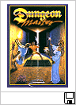

|
Computers
- Main Menu |
Personal Computers :: ST Range ::
Emulation
|
This is just a small selection
of the hundreds of games launched on the ST range of
computers. Between 1985 and 1992, the ST became a
popular machine with games players, mostly due to the
price point of the 520ST range, which was aimed at the
home market. The ST could easily compete with the
early video game consoles from Nintendo and Sega, and
although the ST was eventually eclipsed in power by the
mighty PC, some of the games produced were both pioneering
and utterly engrossing. Even today, there are select
titles that have stood the test of time and can easily
afford hours of your time, if you allow them.
AEX has selected a number of
titles that it feels display the best of ST gaming.
These were some of the "A" list titles released on the
system, some of which had been updated from the older
8-Bit range to take advantage of the ST's new 16-Bit
technology. We have a few more titles to add, and if
you have any opinions of what they should be, go to the
forums now, we are open to suggestions! Soon, we
will add additional information on each title, which you
can select from the list on the left.
All these titles can be
downloaded for use on an ST Emulator (just click on the
title picture below to download), although you will have
to learn the game controls on the fly, its always more fun
that way! We recommend the use of
STEEM 2.4 (or higher), which is available on this page.
A quick-start guide is available to get you started if
your new to ST Emulation on your PC.
|
 |
Click the
Quick Start logo for your ST Emulator Guide from AEX. |
|
| |
|
|
Backlash is the ST equivalent
of the original Novagen Atari 8-Bit game "Encounter",
loosely on
Battlezone. (Although Encounter was ported to the
ST, I've never seen it!). The game graphics are sharp and
colourful, and the speed at which this game runs on the ST
makes it a fast and frantic shoot 'em up worth playing.
Paul Woakes proves he's more than capable of making a
great game for the arcade fan, and its a welcome break from
saving Targ! |
|
© 1987 Novagen Paul Woakes |

|
|
Its the middle of the 22nd
century. You are in control of a high-tech aircraft
carrier with amphibious assault craft. Your job is
to capture new islands which have developed in the
"Southern Ocean" building a network of support islands to
defend them against the enemy carrier, which is intent on
the same objective. Superlative 3D graphics, and a
landmark title for the ST, Carrier Command was everything
you wanted in a real-time battle simulation. |
|
©
1988 Rainbird (Programmed by
Realtime Games UK) |
|
 |
A small company called FTL
(Faster Than Light) who had also created the famous
"Sundog: Frozen Legacy" title for the ST in 1985, unleashed
Dungeon Master to an unsuspecting audience in 1987.
No other dungeon based game came close to this title in
terms of graphics and playability. This was a game
that would engross the player for hours, and it still
stands the test of time today. A must play title for
any games player. |
|
©
1987 FTL (Published by Mirrorsoft) |
|
|
Elite was a landmark game
launched originally on the BBC Microcomputer in 1984.
Ian Bell and David Braben created a space trading game
within 32Kb that amazed the gaming public. In 1987,
Firebird (who had purchased the home computer rights),
published the game for the ST. The Atari 8-Bit was
one of the only popular 8-Bit computers not to get a
conversion, so it was a must have purchase for gamers who
had upgraded to the ST. |
|
©
1988 Firebird (UK) & Rainbird (USA) (ST conversion by Mr.
Micro) |
|
|
Programmed by Factor 5 in
Europe, this title had a lot to live up to. Based on
the original 8-Bit game "Ballblazer", the
16-Bit conversion was much anticipated. This version
used the extra capabilities of the ST, and with updated
graphics and new levels of game play, it proved to be a
good conversion. The essence of the original still
remained, and the extra graphical touches added positively
to the game. |
|
©
1990 Rainbow Arts (Conversion
of Ballblazer by LucasArts) |
 |
Mercenary (also referred to as
Mercenary 1) is an incredible game. It was one of
the first games to provide total freedom, enabling you to
fly, drive or even walk wherever you wanted to, without
disturbing the plot. You could never "die", it was
up to the player to get involved in the storyline, which,
as the name suggests, sees you as a mercenary willing to
work for anybody who would pay you. Amazingly fast
wireframe graphics. Fly by the Fuji! |
|
© 1986 Novagen (Conversion of
original Atari 8-Bit version 1985) |
|
|
Mercenary 2 was the long
awaited follow-up to Mercenary, and saw the use of 3D
filled graphics, as opposed to the wireframe environment
of the original. The math used to create the planets
and other astronomical features is something to
appreciate, especially when you observe these planets
moving in real-time. The game environment is huge,
and it is impossible not to get sucked into this adventure
if you were a fan of the original. |
|
© 1990 Novagen (Mission disks
released in 1991) |
|
|
Mercenary 3 (The Dion Crisis).
Paul Woakes confounded all his fans again by programming
another masterpiece. Not only could you interact
with "people" in this episode of the Mercenary series, but
they had faces too! An entire planetary system
became the focal point in this version, as your missions
became more involved. With total freedom of play, it
was the seminal version. Unfortunately, this was the
last version ever made. |
|
© 1992 Novagen |
|
|
Oids is another game from the
team at FTL. With the success of Dungeon Master, it
would be a difficult act to follow. But FTL did
follow it, and Oids became an instant hit at the time.
Your mission is to rescue your captured comrades from
various planets, and to complete this, you must fly your
tiny spaceship through treacherous planet-scapes, filled
with danger. There is even a planet level designer,
if you ever get the time to use it! Addictive! |
|
© 1988 FTL (Dan Hewitt)
Published by Mirrorsoft (EU) |
|
|
If you have ever played the
original Star Raiders on the Atari 8-Bit (by Doug
Neubauer) you will know what this is all about! The
updated 16-Bit version sports amazing graphics (for the
time), with an updated cockpit area which is styled in a
futuristic metallic blue. This game is a real
classic, and although it may not be as good as the
original, it still needs to be experienced. The
Atari ST version was the only conversion of the original. |
|
© 1985 Atari Corp. |
|
|
Dan Gorlin (the programmer of
Choplifter for the Atari 8-Bit) was the author of Typhoon
Thompson, a game that took nearly 2 years to complete.
Dan was encouraged to finish the project by its publisher,
Broderbund, because Dan was reluctant to complete it
towards the end. Thankfully the game was released,
it is a unique piece of game programming. It may
have a strange plot, but you will be playing this for a
long long time! |
|
© 1988 Broderbund (US) Published
in UK by Domark |
Notice:
|
The games available here are
provided for your enjoyment, and to preserve the
historical essence of the Atari platform. Trademarks
are respected. If you are the copyright/property
holder, and do not wish your game to be available here,
please contact us and we will remove the item(s)
immediately and without question. Alternatively, if
you would like to provide your title(s) for use, or would
like to provide any personal endorsement, we would
appreciate your involvement in keeping these products
available for the Atari community. |
|
 |
|